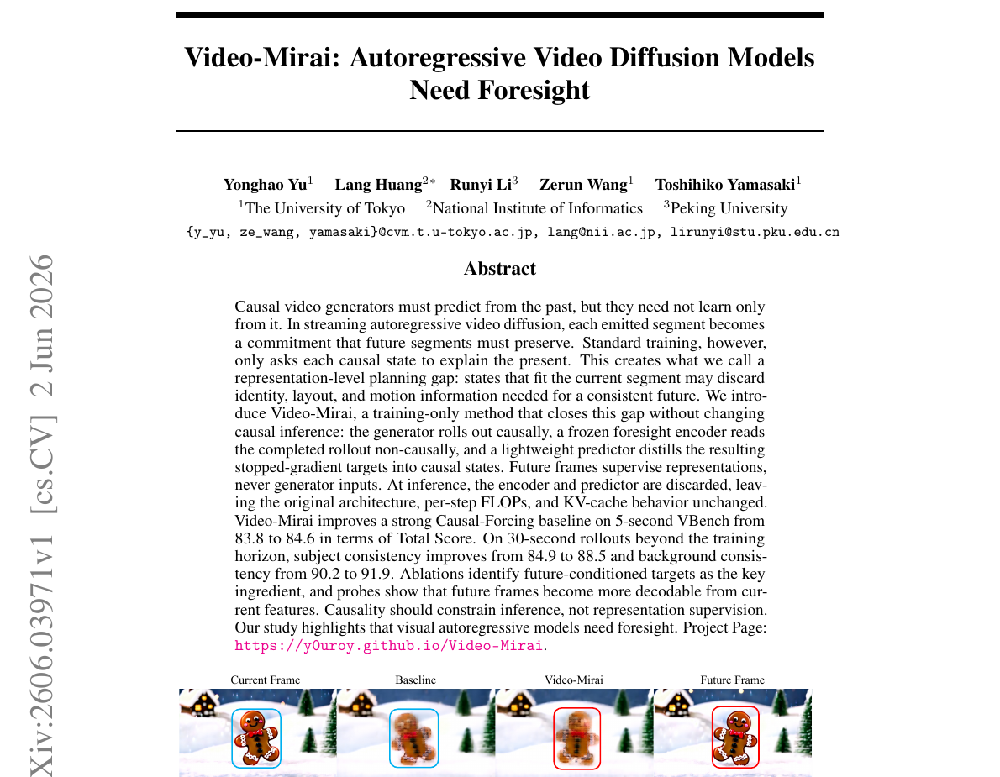
Education & Experience
Academic training first, then research visits and internships.
Education
- Ph.D. Incoming 2026, Department of Information Science and Technology, University of Tokyo. Supervised by Prof. Toshihiko Yamasaki.
- M.S. Peking University, 2026. Supervised by Prof. Jian Zhang.
- B.E. Sichuan University, 2023.
Research Visits & Internships
- ByteDance Research intern at TikTok Group, working on unified vision understanding and generation with multimodal LLMs and diffusion models.
- Wurzburg Visiting student at Wurzburg University, working with Prof. Radu Timofte on generative AI for low-level vision.
- RabbitPre Internship on trustworthy AI and AIGC protection.
Research
A compact map of the themes that connect my recent projects.
Current Direction
I work on generative models that can understand, synthesize, and protect visual content. Recently, my projects have covered autoregressive visual generation, diffusion-based image restoration, multimodal forgery analysis, watermarking, and 3D Gaussian representations.
I am especially interested in models that plan before they generate, preserve identity and provenance, and remain useful under realistic degradation or manipulation.
Recent News
- 2026 Video-Mirai released as an arXiv preprint.
- 2026 Mirai accepted to CVPR 2026.
- 2025 FakeShield accepted to ICLR 2025.
- 2025 OmniGuard accepted to CVPR 2025.
- 2024 OmniSSR selected as an ECCV 2024 Oral.
Autoregressive Generation
Visual generation models with planning, foresight, and stronger temporal structure.
Low-Level Vision
Diffusion-based super-resolution, restoration, and controllable fidelity-realness trade-offs.
Trustworthy AI
Forgery localization, copyright protection, watermarking, and source attribution.
3D & Multimodal AI
3D Gaussian splatting, multimodal LLM reasoning, and visual-audio protection.
Publications
Selected papers grouped by research theme. Equal contribution is marked with *.
Generative AI and Autoregressive Models
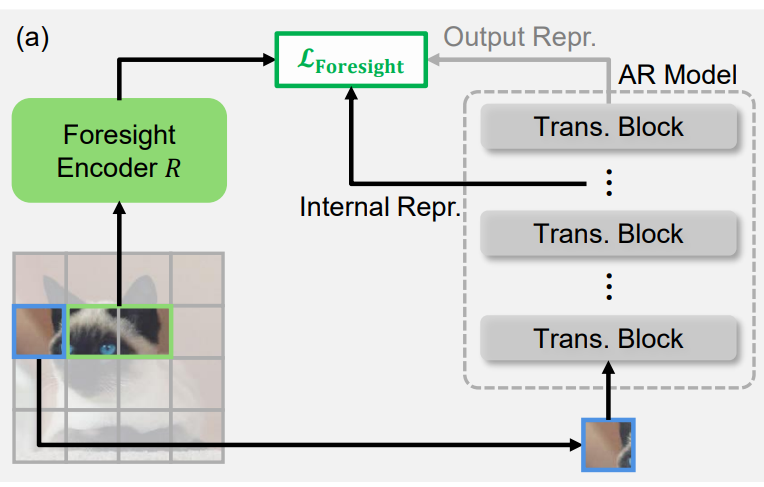
World Models and Agentic AI
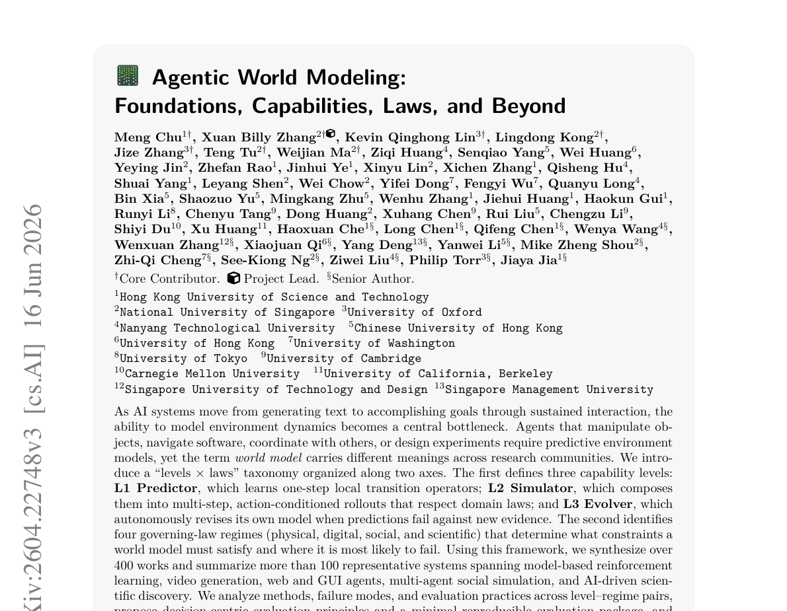
Generative AI for Low-Level Vision
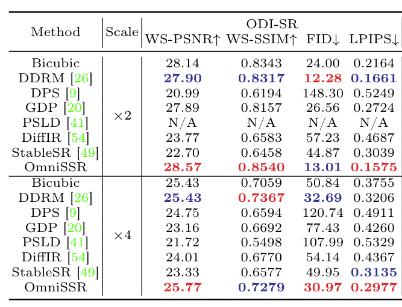
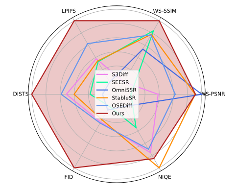
RealOSR: Latent Guidance Boosts Diffusion-based Real-world Omnidirectional Image Super-Resolutions
IEEE JCSVT submission
We introduce RealOSR, an efficient diffusion-based framework for real-world omnidirectional image super-resolution with latent guidance.
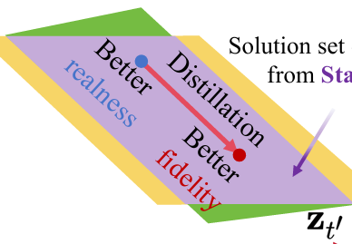
CTSR: Controllable Fidelity-Realness Trade-off Distillation for Real-World Image Super Resolution
arXiv 2025
We achieve controllable real-world image super-resolution, striking a trade-off between fidelity and realness.
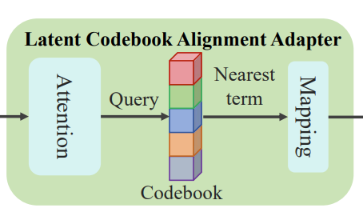
LAFR: Efficient Diffusion-based Blind Face Restoration via Latent Codebook Alignment Adapter
arXiv 2025
We achieve efficient real-world face restoration via latent-space alignment, using only 600 training images from FFHQ.
Generative AI for Trustworthiness and Safety
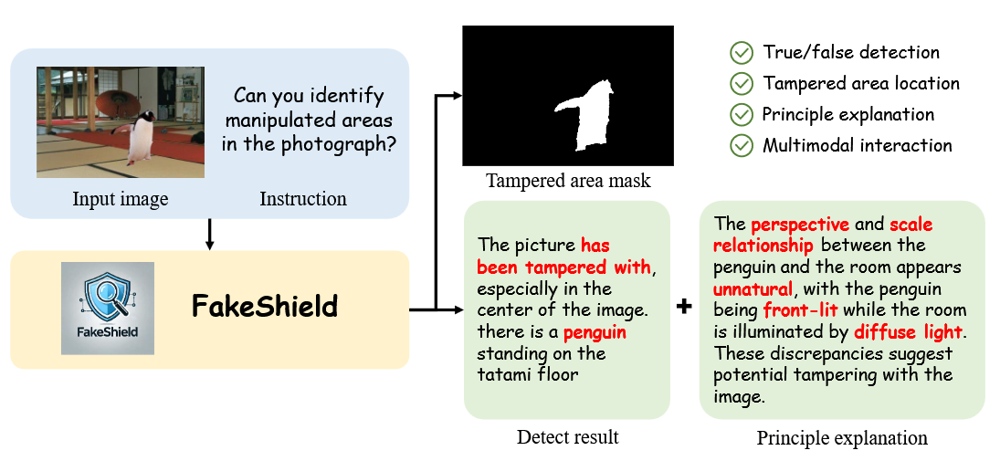
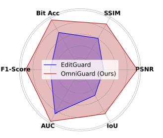
OmniGuard: Hybrid Manipulation Localization via Augmented Versatile Deep Image Watermarking
CVPR 2025
We propose OmniGuard, a hybrid manipulation localization framework for detecting and localizing image manipulations.
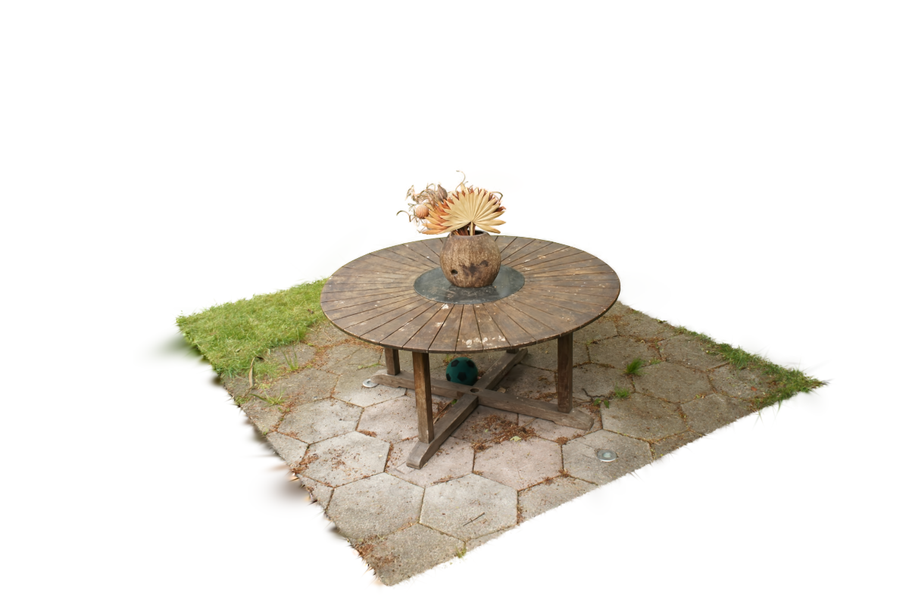

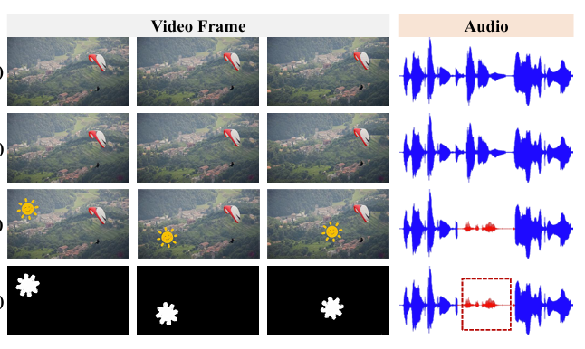
V2A-Mark: Versatile Deep Visual-Audio Watermarking for Manipulation Localization and Copyright Protection
ACM MM 2024
We propose a versatile deep forensic watermark against AIGC editing methods for video and audio.
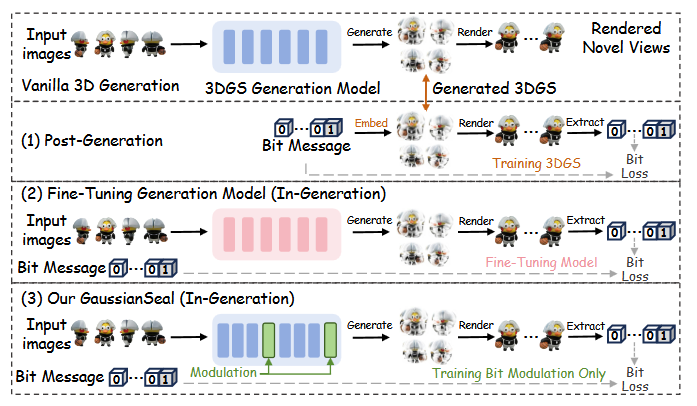
GaussianSeal: Rooting Adaptive Watermarks for 3D Gaussian Generation Model
Machine Intelligence Research
We propose an adaptive watermarking framework for 3D Gaussian generation models.
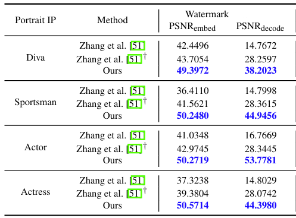
Protect-Your-IP: Scalable Source-Tracing and Attribution against Personalized Generation
IEEE TIFS submission
We propose an IP protection framework against personalized generation, jointly supporting source tracing and scalable attribution.
Publications Before 2023
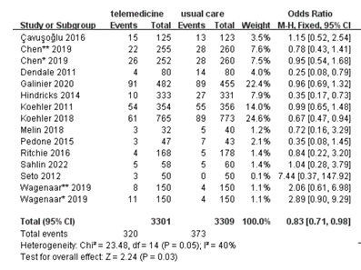
Effectiveness of eHealth Self-management Interventions in Patients with Heart Failure: Systematic Review and Meta-analysis
Journal of Medical Internet Research, 2022
This study systematically reviews evidence for the effectiveness of eHealth self-management in heart failure patients.
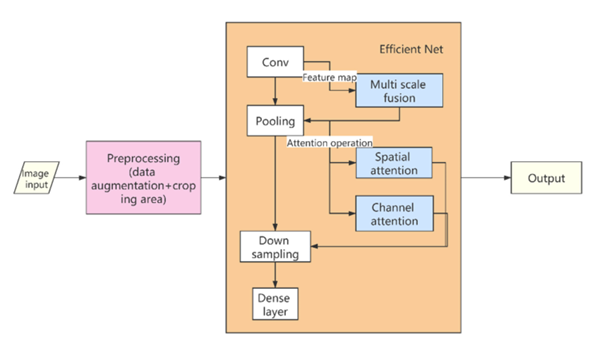
Breast Cancer X-ray Image Staging Based on EfficientNet with Multi-scale Fusion and CBAM Attention
Journal of Physics, 2021
We applied EfficientNet with CBAM attention to breast cancer medical image classification.
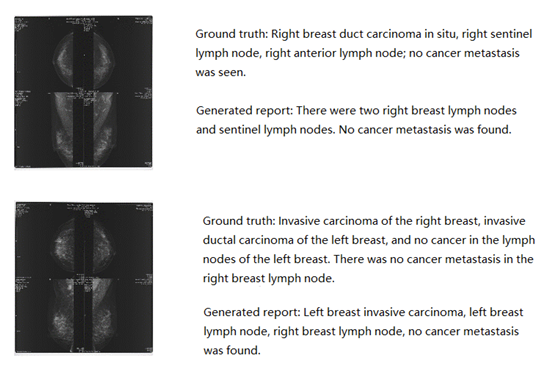
Image Caption and Medical Report Generation Based on Deep Learning: A Review and Algorithm Analysis
IEEE CISAI, 2021
A concise review of image captioning methods and medical report generation.
Academic Service
- Reviewer ICLR 2025 & 2026, AAAI 2026, CVPR 2025 & 2026, NeurIPS 2025 & 2026, ICCV 2025, ACM MM 2025, IEEE JSTSP, and IEEE TIFS.
Selected Honours
- 2026Outstanding Graduate, Peking University
- 2025Merit Student, Peking University
- 2025Scholarship of Ping'An Bank, Peking University & Ping'An Bank
- 2024Merit Student, Peking University
- 2024Scholarship of Public Welfare, Peking University & Guangdong Province
- 2023Outstanding Graduate, Sichuan Province
- 2023Outstanding Graduate, Sichuan University
- 2023National Scholarship, Ministry of Education of China
- 2021Bronze Award, Kaggle NFL Contest 2021
- 2021Scholarship of Soochow-Singapore Industrial Park, Soochow City & Sichuan University